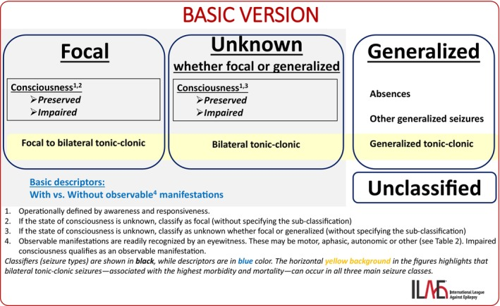

Pergunta central · Pág. 02 de 20
Qualquer súbito e transitório entra no diferencial
Desmaio, confusão que volta, dormência que some, “voz” intermitente — o que todos esses têm em comum no diagnóstico diferencial?
Antes de qualquer número ou síndrome, uma regra-mãe instala a porta. Não é o tipo de manifestação que decide se a epilepsia entra — é o tempo: súbita e transitória, em qualquer domínio, em qualquer idade.
O diferencial permanece aberto
“desmaio” não exclui
“ouvir vozes” intermitente
que retorna ao normal
sempre no DDx
Mantra: súbita e transitória
Regra de ouro: qualquer paciente, de qualquer faixa etária, com manifestações neurológicas súbitas e transitórias → epilepsia no diagnóstico diferencial. A porta não é do tipo de crise — é do tempo do evento.
Motor, sensitivo, sensorial, comportamental
A manifestação vale seja motora, sensitiva, sensorial ou comportamental. O espectro é largo: movimentos coordenados transitórios com retorno ao normal; dormência súbita que volta; perda de consciência súbita com recuperação. Nenhum domínio é privilégio da epilepsia — todos são porta.
Recorrência e o diferencial aberto
A recorrência de episódios reforça a hipótese. O diferencial é amplo: em psiquiatria, “ouvir vozes” intermitentes pode ser crise sensorial (não só psicose). Confusão intermitente com retorno ao normal também entra. E o “desmaio” pensado como síncope vasovagal ainda mantém a epilepsia no diferencial — qualquer manifestação neurológica vale.

Por que importa
Sem esse mantra, a crise não-motora some do radar — e é examente a que a escola e a clínica rotulam errado primeiro.
Resumo operacional
Manifestação neurológica súbita e transitória → epilepsia no DDx, em qualquer idade.
Quiz
Conexão
Definir epilepsia exige mais do que um evento — três vias oficiais decidem quem é epiléptico.